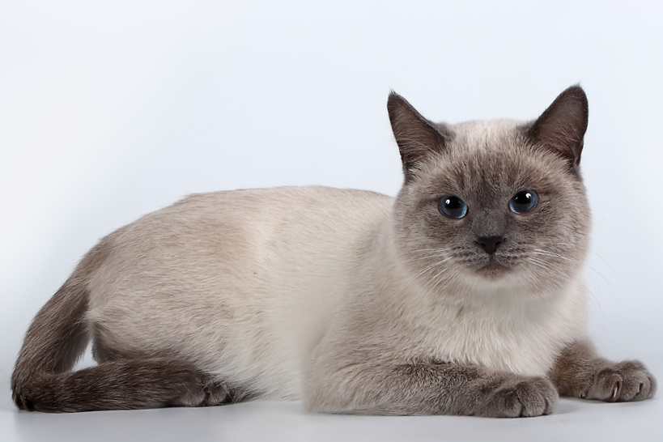

Exploring the World of Felines
– A Global Guide to Cat Breeds"
"Welcome to our feline-friendly haven, where curiosity meets the captivating world of cats! Our website is a
comprehensive guide to the myriad cat breeds from around the globe. Immerse yourself in the enchanting realm
of whiskers and purrs as we unveil the unique habits, habitats, and dietary delights that define each breed.
From the regal Siamese to the exotic Bengal, embark on a journey exploring the diverse landscapes these
feline companions call home.
Let's delve into the captivating world of some popular cat breeds:

Siamese Cat:
Origin:Thailand (formerly Siam)
Habits: Siamese cats are known for their vocal nature and deep blue almond-shaped eyes. They are
highly
social and thrive on human interaction.
Habitat: Adaptable to various environments, Siamese cats enjoy cozy spots with a view, as they
love to
observe
their surroundings.